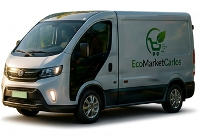

Construyendo un futuro sostenible
En EcoMarketCarlos transformamos la fibra de la caña de azúcar en productos ecológicos innovadores que ayudan a reducir el impacto ambiental y promueven un consumo responsable.
Nuestro objetivo es ofrecer alternativas biodegradables, modernas y funcionales para empresas y personas comprometidas con el cuidado del planeta.

Misión
Brindar productos sostenibles elaborados con fibra de caña de azúcar, ofreciendo soluciones ecológicas de alta calidad que contribuyan al cuidado del medio ambiente y fomenten hábitos de consumo responsables.
Visión
Convertirnos en una empresa líder en innovación sostenible, reconocida por transformar recursos naturales en productos biodegradables que impulsen un futuro más limpio, tecnológico y consciente para las nuevas generaciones.
Objetivos
Sostenibilidad
Reducir el uso de plásticos contaminantes mediante productos biodegradables.
Innovación
Crear soluciones ecológicas modernas usando materiales renovables.
Impacto Ambiental
Promover prácticas responsables que ayuden a proteger el planeta.
Crecimiento
Expandir nuestra marca sostenible a nivel nacional e internacional.
Lo que dicen nuestros clientes
"Los platos y vasos de fibra de caña son súper resistentes. Los usamos para los eventos de nuestra empresa y a todos los invitados les encantó la iniciativa ecológica."
- Mariana Restrepo
Cliente Corporativo"Excelente calidad en las bolsas y cajas de empaque. Mis domicilios llegan perfectos y mis clientes felicitan al restaurante por no usar plásticos."
- Juan Camilo Pérez
Dueño de Restaurante"Compré las resmas de papel ecológico y las libretas para la universidad. La textura es genial y se siente muy bien apoyar proyectos tan conscientes."